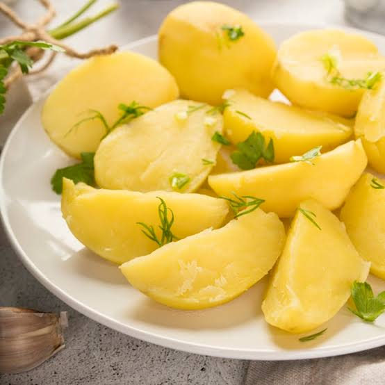
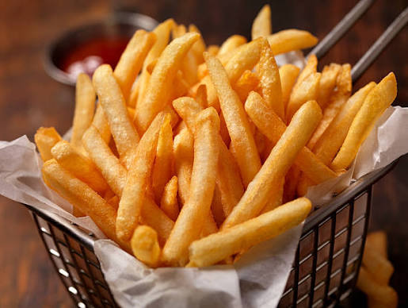
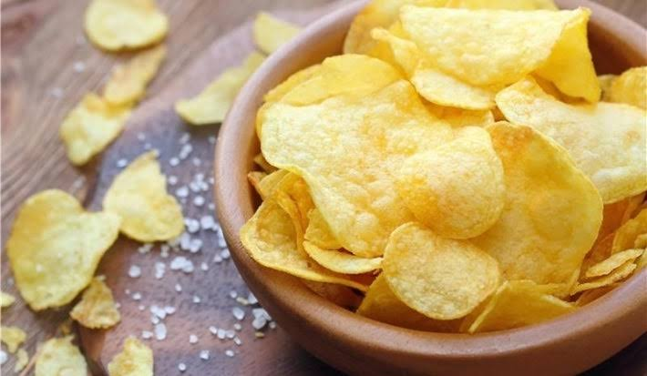
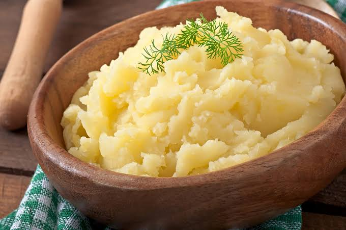

Essas batatas são as minhas favoritas!

Eu gosto de batata porque quando tinha 4 anos minha mãe me deu uma batata cozida e até hoje eu gosto

Primeiro, pegue uma batata e lave, porque ela não vai cozinhar com terra de brinde. Coloque numa panela com água, ligue o fogo e espere até ficar macia, o que geralmente leva uns 20 a 25 minutos. Depois, retire a água, espere esfriar um pouco e pronto: você acaba de derrotar a batata e transformá-la em comida.

Pegue uma batata, descasque e corte em palitos, tentando não transformar a cozinha em cenário de acidente culinário. Depois, seque bem, frite com cuidado em óleo quente até ficar dourada e crocante, retire e coloque sal. Pronto, agora você tem batata frita, a prova de que uma batata pode abandonar a vida humilde e virar protagonista.

Pegue uma batata, descasque e corte em rodelas tão finas que quase viram papel. Seque bem e frite cuidadosamente em óleo quente até ficarem douradas e crocantes, depois coloque sal. Pronto, você transformou uma batata em chips, basicamente uma batata que passou por uma impressora e saiu em modo crocante.

Descasque as batatas, corte em pedaços e cozinhe em água até ficarem tão moles que nem conseguem mais defender sua própria forma. Escorra, amasse bem e misture manteiga, leite e sal até virar uma massa cremosa. Pronto, você acaba de pegar uma batata, tirar toda a sua personalidade e transformá-la em purê.